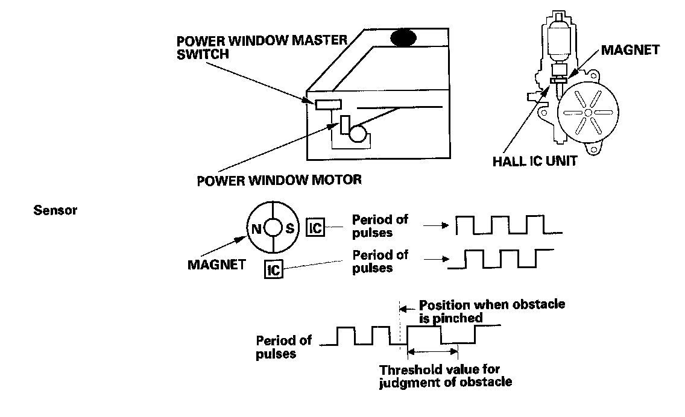

Windows: Description and Operation
Power WindowsSystem Description
Auto Reverse Operation (Except DX and DX-G models)
The system is composed of the power window master switch and the driver's power window motor.

The driver's power window motor incorporates a pulser which generates pulses during the motor's operation and sends the pulses to the driver's power window control unit. As soon as the power window control unit detects no pulses from the pulser, the driver's power window control unit makes the power window motor stop and reverse. If the window is more than halfway closed, it will reverse to half open position. If the window is less than halfway closed, it will stop and reverse about 2 inches. This is to prevent pinching an obstacle during auto-up operation. The auto reverse operation is not active when the switch is held in the up position.